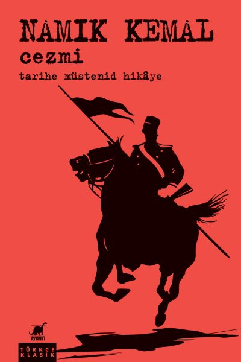

Namık Kemal’in “Cezmi” romanı Ayrıntı Yayınları’nın Türkçe Klasik dizisine eklendi
Yeni Türk edebiyatının ilk tarihi roman örneklerinden biri olan Cezmi, 16. yüzyıl Osmanlı-İran ilişkileri odağında, vatansever asker Cezmi’nin hikâyesini anlatıyor. Oldukça sanatkârane üslûpla yazılan; metin aralarına Farsça, Arapça, Türkçe beyit ve şiirlerin de serpiştirildiği romanı aslına sadık kalınarak yayıma hazırlayan Prof. Dr. Mehmet Kanar, yeni basımda yer verdiği parantez içi açıklamalar ve notlandırmalarla eserin daha iyi anlaşılmasına katkı sağlıyor.
Ayrıntı Yayınları’nın bugüne kadar Sabahattin Ali, Halid Ziya Uşaklıgil, Namık Kemal, Hüseyin Rahmi Gürpınar, Mehmet Rauf, Ahmet Rasim, Cemil Süleyman, Selahattin Enis ve Samipaşazade’nin eserlerini yayımladığı Türkçe Klasik dizisi, Namık Kemal’in Cezmi adlı romanıyla devam ediyor.
On bir fasıldan Cezmi adlı roman, on altıncı yüzyıl Osmanlı-İran ilişkilerinin bir bölümünü Peçevî Tarihi, Hammer Tarihi gibi tarih kaynaklarından da yararlanarak masaya yatırmaktadır. Tarihi şahsiyetlerin oluşturduğu iyi ve kötü karakterlerin mücadelesinde kazanan tarafın iyi karakter olduğu ve bir ideoloji romanı olarak tanımlanabilecek Cezmi’de ağırlıklı olarak vatan sevgisi teması işlenmektedir. Namık Kemal, romanda geçen at binme, okçuluk ve cirit sahnelerinde, Kars’ta geçirdiği yılların hatırasını tekrar yaşatmaktadır.
Doğu dilleri ve Türkoloji üzerine çok önemli çalışmaları bulunan Prof. Dr. Mehmet Kanar tarafından eserin aslına sadık kalınarak yayıma hazırlanan çalışmada, bütün Farsça tamlamaların ve anlaşılması güç kelimelerin günümüzdeki karşılıkları köşeli parantez içinde italik olarak verilirken açıklanması gereken yerler de dipnotlarda belirtiliyor.
Cezmi, raflarda ve internet satış sitelerinde!
Bilgi için: ayrintiyayingrubu.com
instagram.com/ayrintiyayinlari
twitter.com/AYRINTIYAYINEVI
facebook.com/ayrintiyayinevi